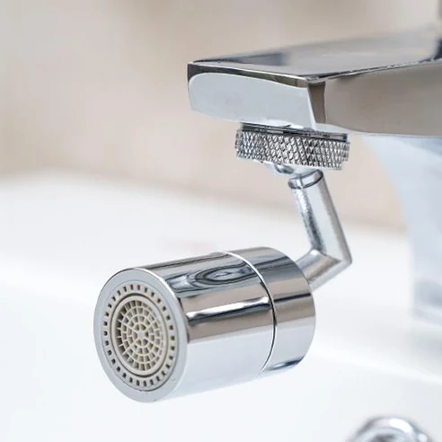
BEST 01물줄기 방향이 자유롭게?
포이포이 720도 회전 스마트 워터탭
여러 방향으로 회전시켜 양치와 세면대 청소 등 필요한 위치에 물줄기를 맞출 수 있는 워터탭입니다.
720도 회전 방식 확인하기 →막힘 출동과 욕실 설비 교체 중 필요한 서비스를 확인하세요.

가벼운 막힘도 방치하면 역류·악취 등 더 큰 문제로 이어질 수 있습니다.

작은 고장도 반복되면 더 큰 문제로 이어질 수 있습니다. 오래되거나 파손된 설비를 확인해보세요.
※ 이 페이지는 네이버 쇼핑 커넥트, 쿠팡 파트너스, 토스쇼핑 쉐어링크, 알리익스프레스 및 테무 제휴활동의 일환으로, 판매 발생 시 이에 따른 일정액의 수수료를 제공받습니다.
청소·배수·수납·설비 관리에 유용한 신기하고 실용적인 제품을 확인해보세요.

BEST 01여러 방향으로 회전시켜 양치와 세면대 청소 등 필요한 위치에 물줄기를 맞출 수 있는 워터탭입니다.
720도 회전 방식 확인하기 →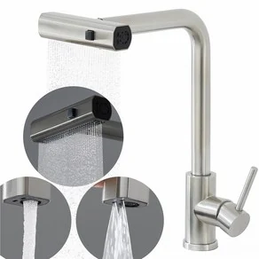
BEST 02와이드 폭포수부터 다양한 물줄기 모드까지 용도에 따라 전환해 사용하는 다기능 주방 수전입니다.
4가지 물줄기 작동 방식 보기 →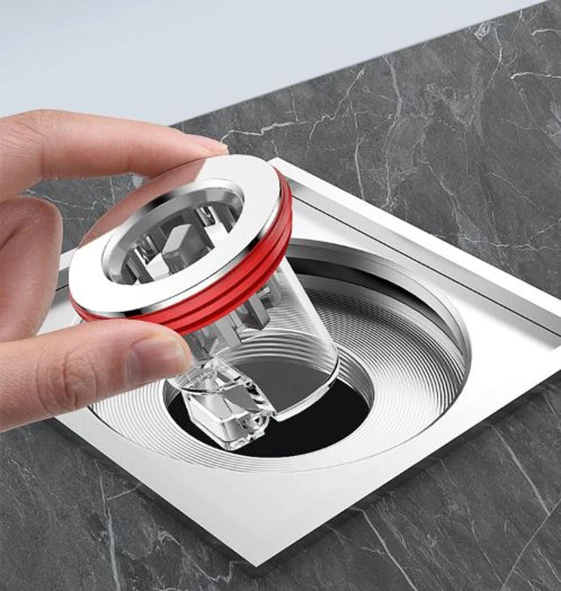
BEST 03배수 시에는 열리고 평소에는 닫히는 방식으로 냄새와 벌레 유입을 줄이는 데 도움을 주는 배수구 트랩입니다.
자동 개폐 구조 확인하기 →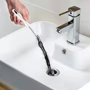
BEST 04좁은 배수구 안쪽에 들어간 머리카락과 이물질을 꺼낼 때 활용하는 간편한 배수 청소도구입니다.
사용 방식과 구성 확인하기 →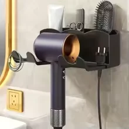
BEST 05헤어드라이어를 벽에 보관하고 필요할 때 핸즈프리 방식으로 활용할 수 있는 무타공 욕실 정리용품입니다.
고정 방식과 사용 모습 보기 →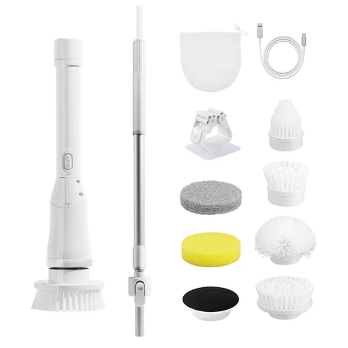
BEST 06회전 브러시로 욕실 타일과 욕조, 세면대 주변을 청소할 때 활용하는 무선 전동 청소기입니다.
브러시 구성과 작동 방식 보기 →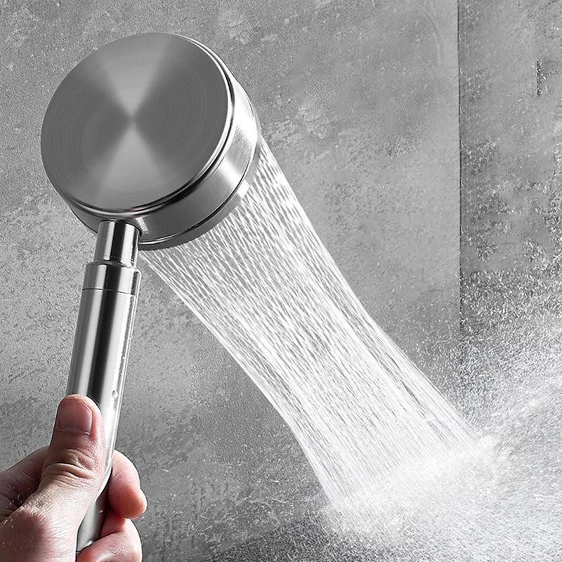
BEST 07스테인리스 소재와 집중된 물줄기로 샤워와 욕실 세척에 활용할 수 있는 제트형 샤워기 헤드입니다.
물줄기 형태와 규격 확인하기 →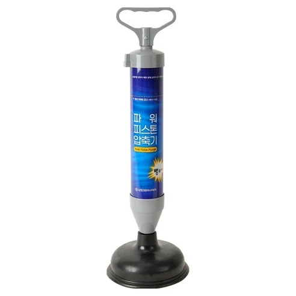
BEST 08피스톤 압력을 이용해 변기와 배수구의 가벼운 막힘을 직접 관리할 때 사용하는 생활도구입니다.
압축 방식과 사용방법 보기 →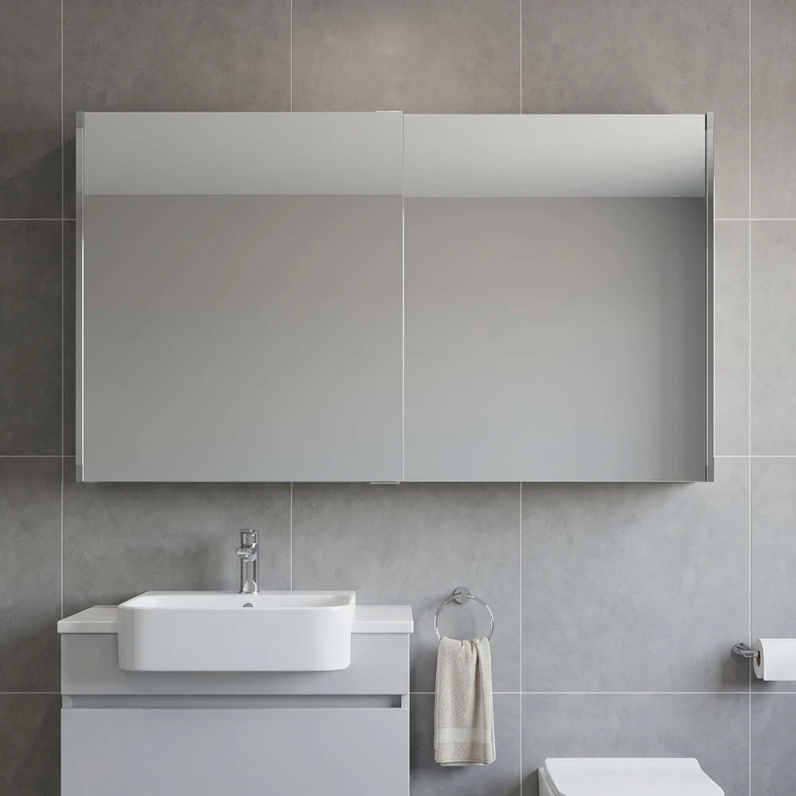
BEST 09거울과 욕실 수납공간을 함께 구성하고 기존 제품의 폐기와 설치까지 확인할 수 있는 슬라이드형 욕실장입니다.
설치 범위와 상세 규격 확인하기 →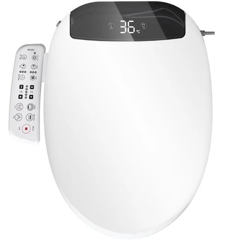
BEST 10자동 노즐세척, 온풍건조, 무드등과 사용자별 모드를 갖춘 기능형 방수 비데입니다.
자동 기능과 설치조건 확인하기 →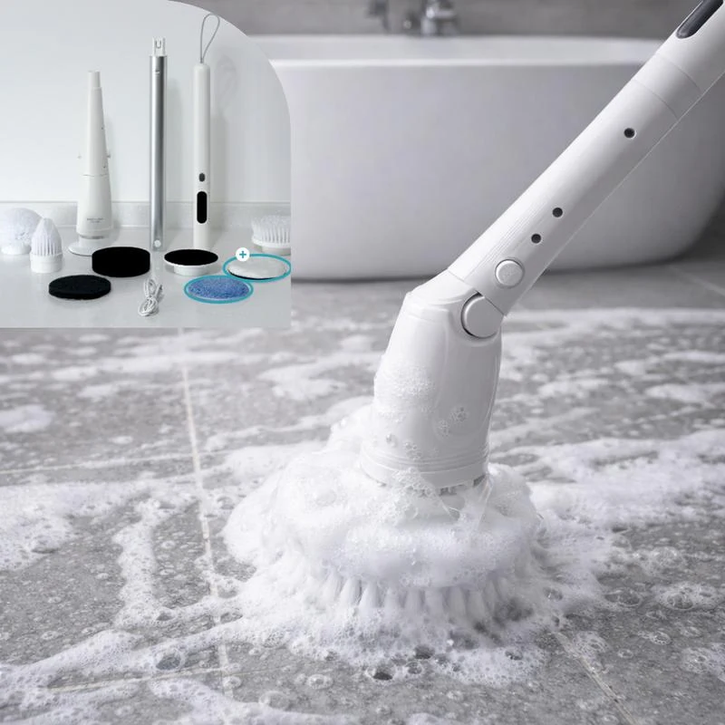
BEST 11욕실과 생활공간의 여러 부분을 관리할 때 필요한 청소도구를 한 번에 확인할 수 있는 실용 구성입니다.
세트 구성품 자세히 보기 →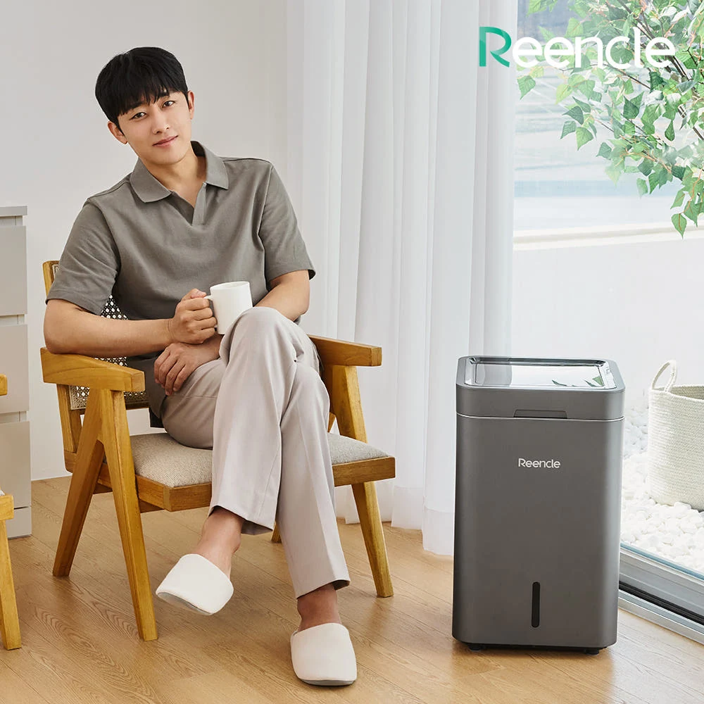
BEST 12미생물 분해 방식과 와이파이 기능을 활용해 주방의 음식물 쓰레기를 관리하는 프리미엄 생활가전입니다.
처리 방식과 용량 확인하기 →